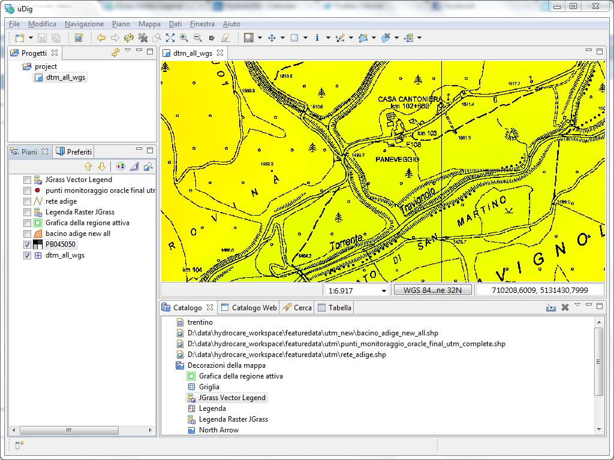

Set raster transparent color¶
Raster files often have a set colour that is used to indicate “no data”. This occurs where a satellite field covers a diagonal swath of territory that does not line up with a rectangular image. It can also occur where simple line work (such a topographical map) is recorded on a white background; by marking the background as transparent you can see through to the other layers.
- Select your raster layer
- Open the Style Editor dialog using the button on the Layers view toolbar
- Choose the Raster Color Mask style page
- Press the checkbox to Enable color mask
- Press the color chooser and select the color to be made transparent
Related reference
Example Use¶
In the original image the white background is opaque preventing you from seeing the elevation map layer.

This is result of setting transparent color to white; allowing the elevation map in yellow to show through:
